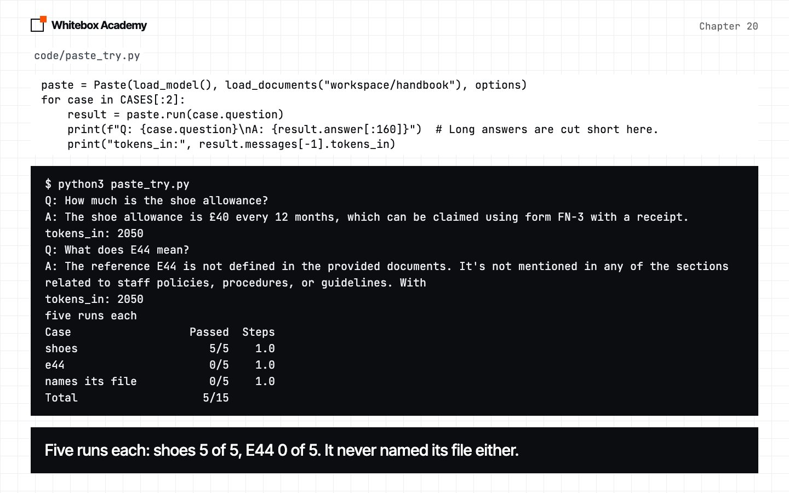
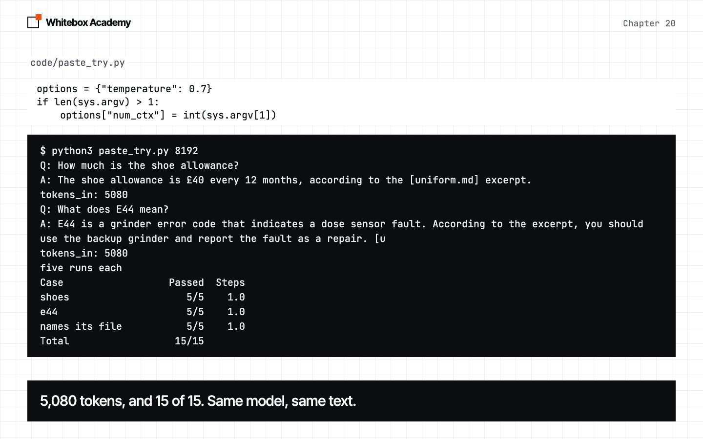
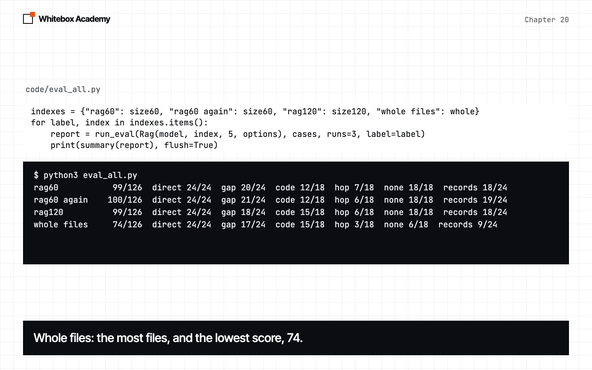

The RAG pipeline
Paste documents until pasting fails, build a pipeline that finds the right passages, and learn when you don’t need one.
You found the file, but not the answer
In chapter 19, you searched the handbook by meaning. You got back the right file, but not an answer.
Before you build anything, try the simplest idea there is: paste the documents into the prompt, and ask. It works, and then it doesn’t. RAG stands for retrieval-augmented generation. It means: search first, put what you found in the prompt, and let the model answer from it.
Start Ollama, activate the .venv from chapter 05, and work in chapters/20-rag-pipeline/code. You need the embedding model from chapter 19, so run ollama pull nomic-embed-text if you don’t have it. This chapter doesn’t use Chroma, so it works on any Python version. The records, questions.py, library.py and the measuring scripts are provided. To check the framework, run python3 -m pytest tests from code. You should see 52 passed.
Paste the handbook
paste_try.py pastes all 42 handbook files into the prompt, and asks two questions. Both facts are in the handbook, and the prompt tells the model to name its file. Predict: will it get both right?
$ python3 paste_try.py
Q: How much is the shoe allowance?
A: The shoe allowance is £40 every 12 months, which can be claimed using form FN-3 with a receipt.
tokens_in: 2050
Q: What does E44 mean?
A: The reference E44 is not defined in the provided documents. It's not mentioned in any of the sections related to staff policies, procedures, or guidelines. With
tokens_in: 2050
five runs each
Case Passed Steps
shoes 5/5 1.0
e44 0/5 1.0
names its file 0/5 1.0
Total 5/15
This is real output from qwen2.5:7b, with long answers cut at 160 characters by the script. The shoe question looks perfect. But E44 is in grinder-errors.md, and the model said it isn’t there, in 5 runs of 5. And it never named its file.
The cut you can’t see
There was no error. count_tokens.py measures each file on its own, so nothing gets cut:
$ python3 count_tokens.py
handbook 42 files 4,764 tokens
records 53 files 65,108 tokens
together 95 files 69,872 tokens
The handbook is 4,764 tokens, and the model received 2,050. As you saw in chapter 07, Ollama cuts text that doesn’t fit the context window, and carries on. The window is the num_ctx option. Our default was 4,096, and yours may differ, so trust tokens_in.
uniform.md is near the end of the prompt, and it survived. The instruction to name a file is at the very start, and the model stopped following it. That points to a cut from the front. Now set the window. Predict: what will tokens_in be?
$ python3 paste_try.py 8192
Q: How much is the shoe allowance?
A: The shoe allowance is £40 every 12 months, according to the [uniform.md] excerpt.
tokens_in: 5080
Q: What does E44 mean?
A: E44 is a grinder error code that indicates a dose sensor fault. According to the excerpt, you should use the backup grinder and report the fault as a repair. [u
tokens_in: 5080
five runs each
Case Passed Steps
shoes 5/5 1.0
e44 5/5 1.0
names its file 5/5 1.0
Total 15/15
-
Default window
2,050 tokens went in. 5 of 15 passed, with no error.

-
A window of 8192
5,080 tokens went in, and 15 of 15 passed.

Add the records
The company also has a year of records. Together with the handbook, that’s 69,872 tokens across 95 files, and ollama show qwen2.5:7b gives a context length of 32,768. So no setting can hold them. paste_all.py tries anyway. The handbook comes first, and suppliers.md comes last. Predict: how much of the text gets in?
$ python3 paste_all.py 32768
direct:float FAIL 'Based on the log entries, the till float appears to be recor'
direct:fridge FAIL 'Based on the information provided in the log entries, there '
code:e44 FAIL 'Based on the context provided, E44 likely refers to a specif'
none:pension FAIL 'Based on the information provided in the given documents, th'
records:flood FAIL 'The log entries do not provide specific details about a floo'
records:film-crew FAIL 'Based on the information provided, there is no specific ment'
records:fennel-min pass 'The minimum order with Fennel Bakehouse is £60 per branch.'
records:lantern-price pass 'The price for a 250g bag of Lantern coffee is £8.50.'
num_ctx 32768: 2/8 passed, 58 seconds per question
tokens_in 16,386 of 69,872 (23% of the text)
Only 16,386 tokens went in: half the window, and 23% of the text. The two passes are about files at the end of the prompt. Each question ran once, so treat this as a sample and not a score. The check for pension only accepts “I don’t know”, and 60 characters can’t show whether that was a false failure. Our seconds came from a busy machine, so they say nothing about yours.
A bigger window takes memory too: ollama ps showed the model at 4.7 GB with a window of 4,096, and 6.6 GB with 32,768. You can’t send everything, so you must choose what to send. That’s retrieval.
Chunks, then the pipeline
A log can run to about 1,000 words, and the question might be about one sentence. So cut each document into smaller pieces, called chunks.
def split_text(text, size=120):
"""Split on blank lines, then join paragraphs until a piece reaches about size words."""
pieces, current = [], []
for paragraph in re.split(r"\n\s*\n", text.strip()):
if current and len(" ".join(current).split()) + len(paragraph.split()) > size:
pieces.append("\n\n".join(current))
current = []
current.append(paragraph)
pieces.append("\n\n".join(current))
return pieces
re.split(r"\n\s*\n", ...)splits the text at each blank line.currentcollects paragraphs. If the next one would passsizewords, the piece is finished.- A paragraph is never broken, so one long paragraph can make a chunk bigger than
size. make_chunksdoes this for each document, and remembers each chunk’s file inChunk.source.
$ python3 chunks.py
['One two three.', 'Four five six.', 'Seven eight nine ten eleven.']
['One two three.\n\nFour five six.', 'Seven eight nine ten eleven.']
['One two three.\n\nFour five six.\n\nSeven eight nine ten eleven.']
95 files
size 20: 2980 chunks, 15 words on average
size 60: 934 chunks, 48 words on average
size 120: 447 chunks, 102 words on average
size 300: 219 chunks, 208 words on average
Now the pieces join up. Rag searches once, puts the hits in the prompt, and asks the model once. There’s no loop and no tool.
def run(self, question):
hits = self.index.search(question, self.k)
messages = [
Message("system", RAG_SYSTEM),
Message("user", f"Excerpts:\n\n{excerpts(hits)}\n\nQuestion: {question}"),
]
reply = self.model.chat(messages, **self.options)
return Result(reply.content, messages + [reply], 1)
The flood is one sentence in a log, and pasting missed it. Predict: how many tokens will the model need now?
$ python3 ask.py
0.87 log-harbour-2025-02.md
0.69 log-harbour-2025-09.md
0.68 log-harbour-2025-01.md
0.67 log-harbour-2025-02.md
0.67 log-harbour-2025-08.md
Answer: The stock worth £640 was lost when the Harbour cellar flooded. [log-harbour-2025-02.md]
tokens_in: 570
five runs each
Case Passed Steps
records:flood 5/5 1.0
none:dental 5/5 1.0
Total 10/10
570 tokens, against 16,386 for pasting. It fits the default window, so nothing is cut and the instructions survive.
A file hit rate, then the answers
A wrong answer could come from the search or from the model, so measure them apart. hit_rate needs no chat model. It checks that every needed file is in the top k: the right file, not the right text. So we call it a file hit rate. Predict: which index finds the most files?
$ python3 hit.py
36 questions. File hit rate, by k:
Index k=1 k=3 k=5
whole files 21 28 31
size 120 20 24 28
size 60 25 28 28
Whole files lead at k=5. So why chunk at all? Check the answers. eval_all.py runs 42 questions three times each, with rag60 twice, to compare it with itself. It makes 504 model calls, so it takes a while. If your machine is slow, predict, then read our output below.
$ python3 eval_all.py
rag60 99/126 direct 24/24 gap 20/24 code 12/18 hop 7/18 none 18/18 records 18/24
rag60 again 100/126 direct 24/24 gap 21/24 code 12/18 hop 6/18 none 18/18 records 19/24
rag120 99/126 direct 24/24 gap 18/24 code 15/18 hop 6/18 none 18/18 records 18/24
whole files 74/126 direct 24/24 gap 17/24 code 15/18 hop 3/18 none 6/18 records 9/24
The most files, and the lowest score. rag60 and rag120 are as close as rag60 is to itself, so don’t pick a winner. But is 74 fair? Five whole logs don’t fit the default window, so this is the silent cut again. Give them room:
$ python3 whole_files.py
whole 16384 103/126 direct 24/24 gap 17/24 code 15/18 hop 5/18 none 18/18 records 24/24
tokens_in: 7191
74 became 103, level with chunks. We expected chunks to win, and they didn’t. The honest difference is cost: 7,191 tokens for the flood question, against 570. Whole files only worked because these files are small and we raised the window. On these documents, chunks bought a smaller prompt, not a better score.

The right file isn’t the right answer
hit_vs_answer.py prints the questions where the file hit and the six rag60 runs disagree:
$ python3 hit_vs_answer.py
Question File hit Passed
mice yes 0/6
hair yes 5/6
old-mill-repair no 6/6
card-reader yes 0/6
tidewater-fee yes 1/6
It goes wrong in both directions. old-mill-repair “missed” a file and passed every time, because the number it needed was in the file it did find. card-reader is chapter 21’s problem. Here’s why tidewater-fee failed:
$ python3 tidewater.py
0.67 suppliers.md
Supplies: Machine service, Harbour and Old Mill. Account manager: Marek Dolan. Terms: Call-out fee £85. Invoices are paid within 30 days.
## Northline Service
Supplies: Machine service, Riverside and Station. Account manager: Yusuf Kaya. Terms: Call-out fee £95. Invoices are paid within 30 days.
## GreenLoop
Does this chunk say Tidewater? False
five runs
Case Passed Steps
records:tidewater-fee 0/5 1.0
Total 0/5
A real failure
The answer is £85, but the heading ## Tidewater Espresso Service landed at the end of the chunk before. The only name near a fee is Northline. In the saved reports, all 5 failed runs said £95. The file hit rate counts this as a success.
A false failure
hair lost a run on “Yes, you need to tie back long hair”. That’s right. Our check wanted the word “tied”. We left the check alone, because the questions were fixed before measuring, so that first rag60 row is one point too low.
A different limit
The hop questions need two facts, and Rag searches once.
When you don’t need RAG
RAG has a cost: an index, chunk sizes to choose, and failures like these. eval_handbook.py compares it with pasting on the 32 handbook questions, where pasting can fit. Predict: which will score highest?
$ python3 eval_handbook.py
paste default 38/96 direct 14/24 gap 12/24 code 3/18 hop 9/18 none 0/12
paste 8192 83/96 direct 24/24 gap 13/24 code 18/18 hop 16/18 none 12/12
rag60 75/96 direct 24/24 gap 19/24 code 12/18 hop 8/18 none 12/12
- The silent cut is the worst result here. Same model, same text, one option: 38 against 83.
- Pasting beat RAG on this small set, 83 to 75. It won on
codeandhop, because no search could miss a fact. - RAG won on
gap, 19 to 13. Of pasting’s 11 failures there, 8 were “I don’t know”, with the answer in the prompt. This is one document set, so don’t take these gaps as general rules.
| Your documents | What to do |
|---|---|
| Fit in the window with room to spare | Paste them. Set num_ctx, and check tokens_in |
| Too big for the window, or too big for your memory | Use RAG |
| Fit, but you ask many questions or pay per token | Weigh the cost: RAG sent 570 tokens, and pasting 5,080 |
These are real errors
| What happened | What you see | The fix |
|---|---|---|
| Ollama isn’t running | whitebox.models.ModelError: Couldn't reach Ollama | Start Ollama |
| The embedding model is missing | Ollama said 404: {"error":"model \"nomic-embed-text\" not found, try pulling it first"} | ollama pull nomic-embed-text |
You ran hit_vs_answer.py before eval_all.py | FileNotFoundError: [Errno 2] No such file or directory: 'rag60.json' | Run eval_all.py first |
You ran paste_all.py with no number | IndexError: list index out of range | Add a window: python3 paste_all.py 32768 |
| The text was cut | No error at all. tokens_in is smaller than your text | Raise num_ctx, or use RAG |
Exercises
From chapters/20-rag-pipeline, open exercises.py and complete the five TODOs:
fits_in_context: estimate whether documents can be pasted.fixed_split: split by word count, ignoring paragraphs.chunks_per_file: count how many chunks each file made.cites: a check that the answer names a file.missed: list the questions thathit_rateonly counts.
Then run python3 -m pytest test_exercises.py from that folder. These checks use a fake model and a fake embedder, so Ollama doesn’t need to be running. You’ve finished when you see 5 passed.
Optional exercise: paste everything, and report back
This one is optional, and nothing later depends on it. It’s heavy for your machine, so close other work first. From code, run python3 paste_all.py 32768. On a machine with 8 GB of memory, use python3 paste_all.py 16384 instead.
To change the questions, edit NAMES in the script, using 5 to 10 names from questions.py. Compare tokens_in with the 69,872 tokens of text to see the cut, and run ollama ps straight after to see the memory used.
We tried 16384 on two questions only. Both failed, tokens_in was 8,194, which is 12% of the text, and ollama ps showed 5.6 GB. The model call gives up after 180 seconds, so a slow machine may print no answer. That’s a useful result too.
Share your machine, memory, num_ctx, score, seconds per question and tokens_in in GitHub Discussions.
Common mistakes
- Trusting a good answer as proof nothing was cut. The shoe question passed 5 of 5 with most of the handbook missing. Check
tokens_in. - Reaching for RAG before you need it. If the documents fit, pasting is less work, and it scored higher on our handbook.
- Reading a file hit rate as a success rate. The best file hit rate here came with the worst score.
- Blaming the search for a cut. Whole files looked terrible until they had room.
- Picking a chunk size from one run.
rag60andrag120were as close asrag60and itself. - Forgetting the model has to read the chunk. A chunk with no name in it can give a confident wrong answer.
What you opened
- Pasting works if the text fits. If it doesn’t, Ollama cuts it from the front with no error, and your instructions can go too.
num_ctxsets the window, andtokens_inshows what really went in.split_textandmake_chunkscut documents into pieces, at paragraph breaks.Ragsearches once, puts the hits in the prompt, and asks the model once.hit_rateis a file hit rate: right file, not right text. Measure the answers as well.- On our documents, chunks bought a much smaller prompt, not a better score.
- If your documents fit, you may not need RAG.
The name and the idea come from the 2020 paper Retrieval-Augmented Generation for Knowledge-Intensive NLP Tasks.